The first-term prototype that seeded the thesis. Starting from five domestic objects — pineapple, winter cherry, needle mushroom, bread, candle — the project decodes their decay behaviours as material logics: hygromorphic actuation, latent heat storage, mycelial binding, fermentation energy, and leaf abscission. These logics are then translated into a bio-cybernetic urban facade — a living metabolic machine.
毕设的"前传"——一份学期一原型。从五种家庭日常物——菠萝、灯笼果、金针菇、面包、蜡烛——出发，把它们的衰变行为解码为五种材料逻辑：吸湿致动、潜热储能、菌丝结合、发酵供能、落叶机制。再把这些逻辑反向翻译成一面"生物-控制论"立面——一台活的代谢机器。
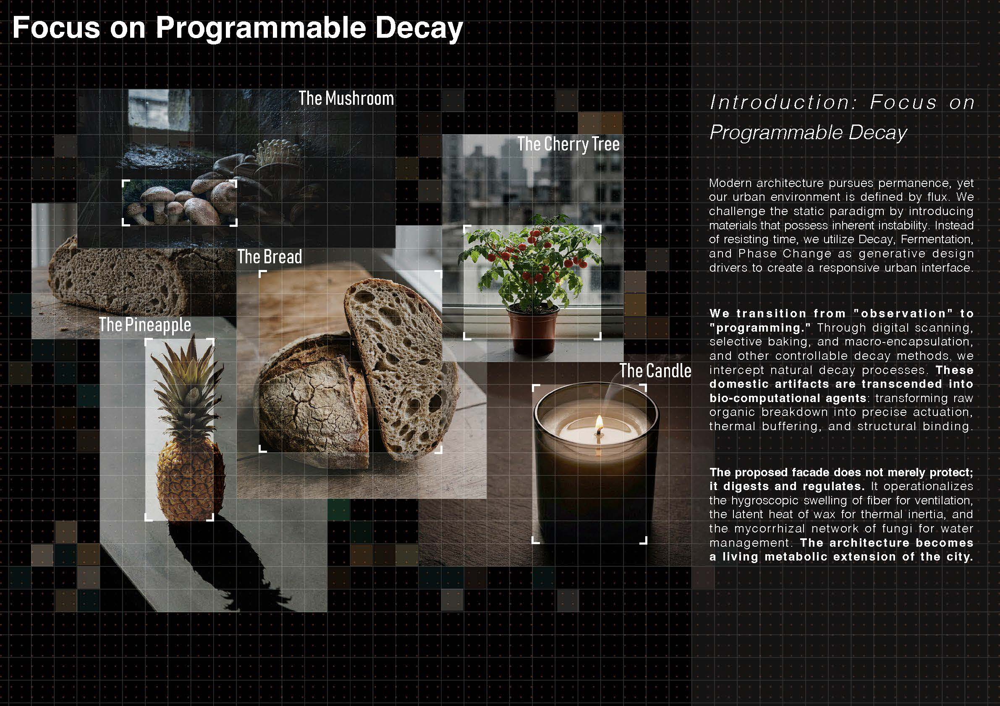
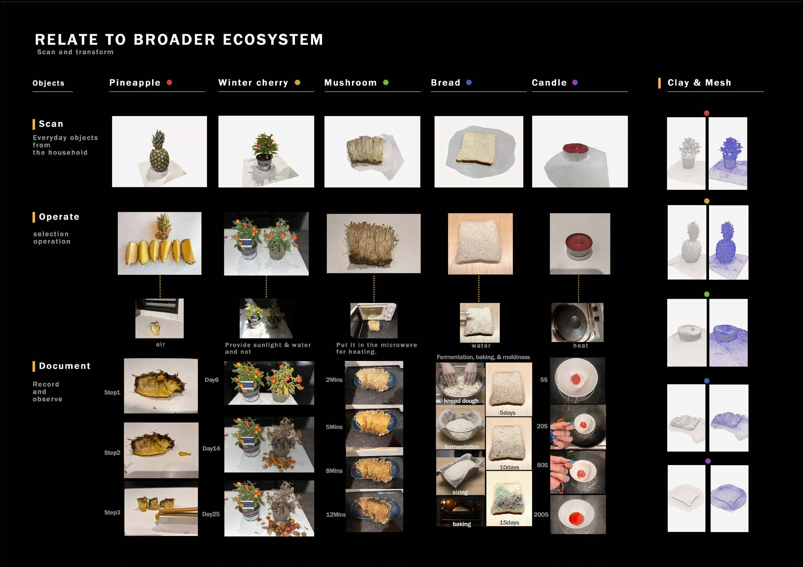
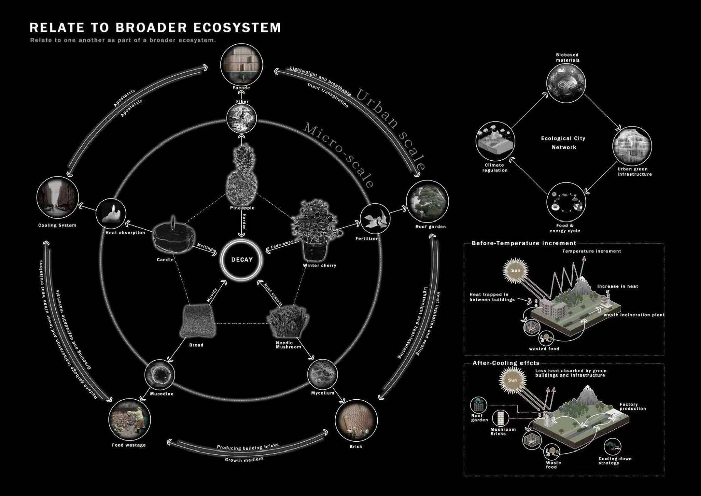
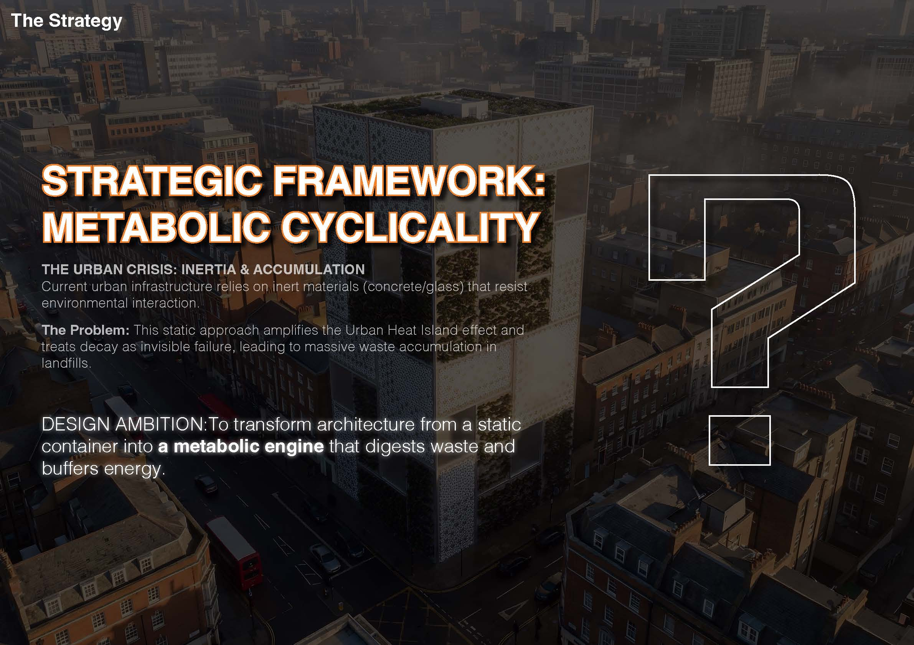
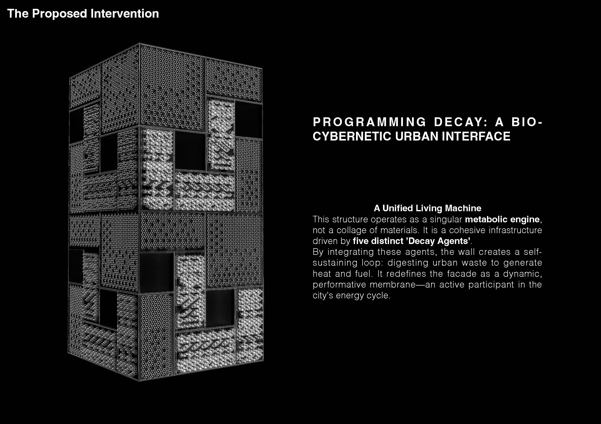
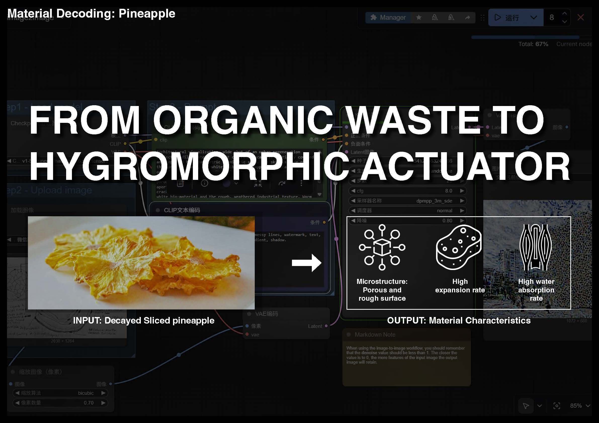
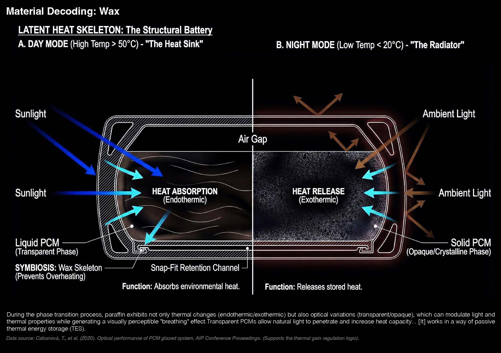
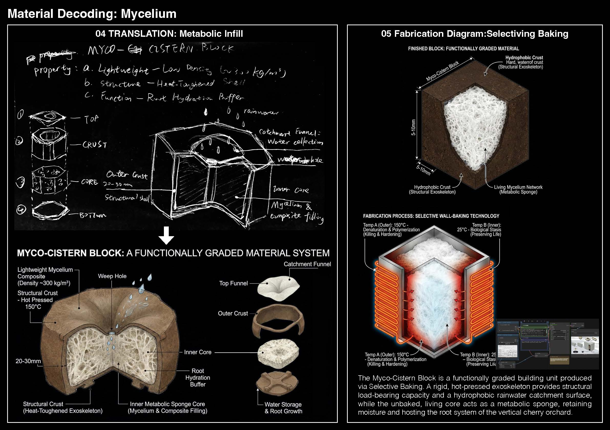
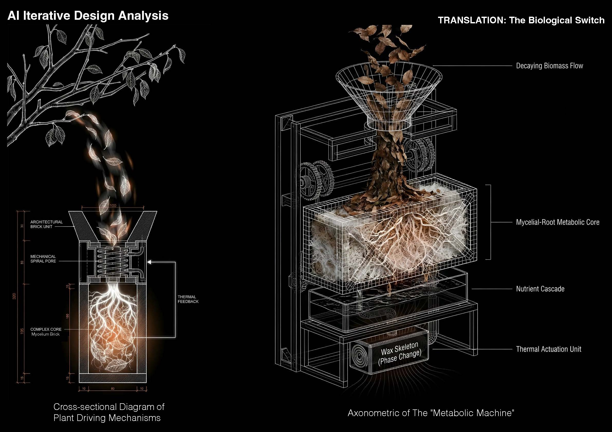
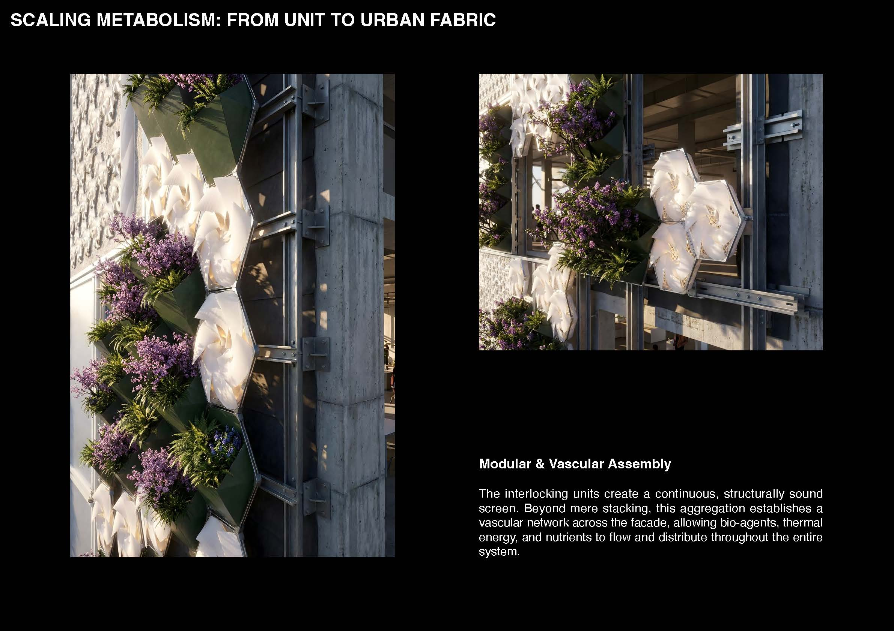
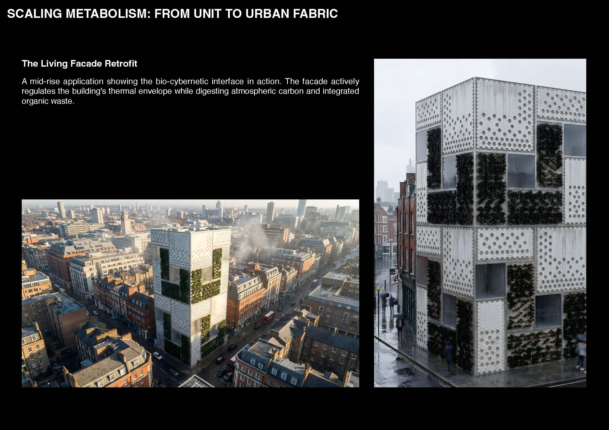
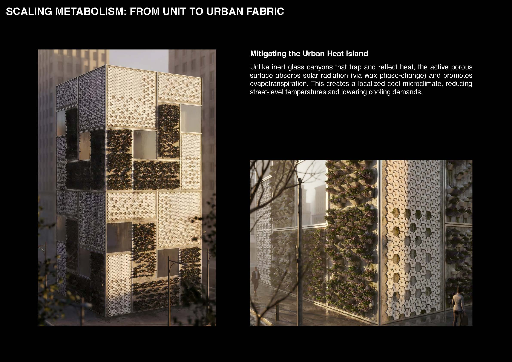
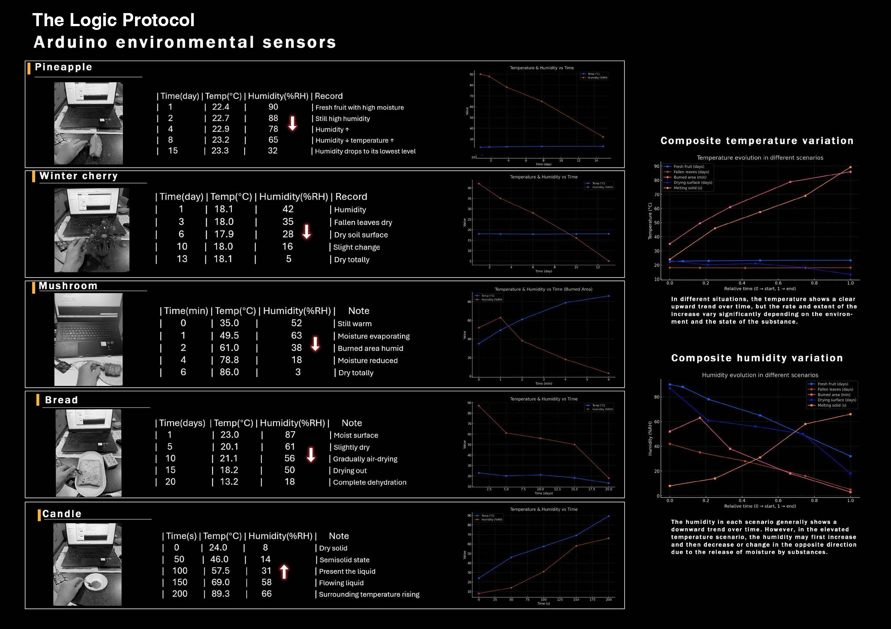